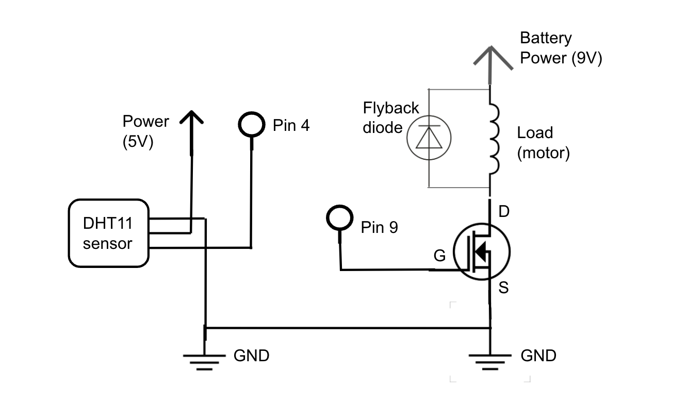
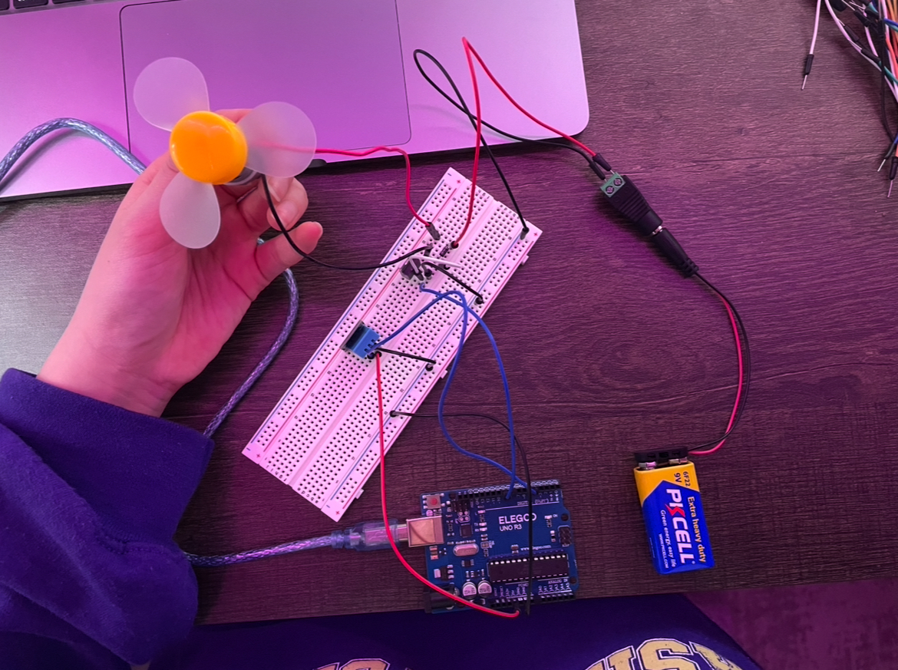

Overview
I created a schematic (below) for a DHT sensor (which reads temperature and
humidity) that takes power from the Arduino, PWM signal from digital pin 4,
and goes to ground. On the right of the schematic, I have an external power
supply of a 9V battery powering a fan motor which is connected in parallel
with a flyback diode to prevent voltage spikes. Then, this goes into a
N-MOSFET transistor where the power goes into drain, the gate goes into
digital pin 9 (to read PWM signals), and source goes into ground.

Schematic for a DHT11 sensor and a fan motor
with a N-MOSFET transistor
Building the Circuit
Then, I built my circuit based on my schematic, starting with a 9V battery to
power my fan motor. Between the positive and negative wires from the motor, I
used a flyback diode which prevents voltage spikes. The negative wire is then
also connected to the drain from the N-MOSFET transistor
connecting pin 2 to a 1 megaohm resistor (for input)
sending the signal to pin 4. I used an alligator clip to connect my resistor to my
object of choice, which was a metal hook clasp. Touching the hook clasp would activate
and send a signal back to the circuit. Then, I connected my servo motor to power,
ground, and pin 9, which would send a PWM signal to the motor.

Circuit of a DHT11 sensor and fan motor
Coding the Firmware
I coded the firmware in an .ino file to implement a circuit where as soon as the
sensor reads that the metal object has been directly touched, the servo motor
position turns 180 degrees. It stays unmoving at 0 degrees otherwise.
I used the serial monitor to read the sensor values and test what value would be
best to use as the threshhold value for the system to know the metal object was
touched. Realizing that at neutral/sitting/no-touching the sensor value is less
than 100 and that touching the object brings it up to around 2000, I set the touch
threshhold value to be at 1000. So the servo motor only changes position if that it
senses the threshhold value or above it.
// installing libraries for using DHT 11 sensor
#include <Adafruit_Sensor.h>
#include <DHT.h>
#include <DHT_U.h>
// defining digital pin connected to DHT sensor (sends signal)
#define DHTPIN 4
// defining DHT 11 sensor
#define DHTTYPE DHT11
// defining PWN pin that controls fan motor
#define FAN_PIN 9
// initialize DHT sensor
DHT dht(DHTPIN, DHTTYPE);
// 24 degrees C is the threshhold for when this fan turns on
// found through testing with serial monitor
int TEMP_THRESHHOLD = 20;
void setup() {
// beginning serial monitor
Serial.begin(9600);
// beginning DHT sensor
dht.begin();
// setting the fan control pin as an output
pinMode(FAN_PIN, OUTPUT);
// start with the fan off
analogWrite(FAN_PIN, 0);
}
void loop() {
// wait a few seconds between readings for stability
delay(2000);
// reads temperature from DHT sensor
float temp = dht.readTemperature();
// printing temp values from sensor for testing/debugging
Serial.print("Temperature: ");
Serial.print(temp);
Serial.println(" °C");
// checking if temperature meets the threshhold, fan turns on if meets temp threshhold
if (temp >= TEMP_THRESHHOLD) {
// turn the fan on at a quarter of its speed (PWM value 64 out of 255)
analogWrite(FAN_PIN, 64);
} else {
// if temp is not at threshhold, fan turns off
analogWrite(FAN_PIN, 0);
}
}
Here is the final output operation! At the very start of the video I blow
hot air towards the sensor to bring it up above the temperature threshhold.
By reaching it, the fan then turns on.

Additional Questions
1. Say you are using a servo motor you attach to pin 9. In your loop() you have the following code:
for (int i=0, i<180, i++){servo.write(i); delay(100);}
Draw a graph
with the X axis in seconds, for two seconds, and the y-axis the voltage at pin 9 with respect to
ground.
Pin 9 sends the PWM (pulse width modulation) signal to the servo, and the width of
the signal determines the servo's position. It varies between 1 ms and 2 ms and the
voltage alternates between 0V and 5V. For a fixed period of 20 ms, the pulse width
increases from 1ms to 20ms. As the voltage oscillates between 0V and 5V, the amount
of time the signal is at 5V gradually increases while the amount of time that the
signal is at 0V gradually decreases. The PWM signal changes to control the servo's
position.

2. Your input device is slightly broken, leading it to give us an erroneous reading
1% of the time. How can we address this? Answer in (pseudo)code.
// defining constants for calibration, which will be done by taking 10 readings and calculating the average
const int NUM_READINGS = 10; // averaging from this number of readings
long readings[NUM_READINGS]; // array for storing readings
int readIndex = 0; // index for current reading
long total = 0; // total sum of the readings
long average = 0; // average value of the readings
// libraries for the capacitive sensor and servo
#include <CapacitiveSensor.h>
#include <Servo.h>
void setup() {
// beginning serial monitor
Serial.begin(9600);
//attaching servo to pin 9
myservo.attach(9);
// initializing readings array
for (int i = 0; i < NUM_READINGS; i++) {
readings[i] = 0; // starting with zero
}
}
void loop() {
// reads the sensor to see if the metal object was touched
long touch = cs_4_2.capacitiveSensor(30); // takes 30 readings and returns sum of the results
// subtract the last reading from the total
total -= readings[readIndex];
// add the new reading to the total
readings[readIndex] = touch;
total += readings[readIndex];
// move to the next index
readIndex = (readIndex + 1) % NUM_READINGS;
// calculating the average of all readings = new filtered sensor value
average = total / NUM_READINGS;
// printing filtered sensor value for debugging
Serial.print("Filtered Sensor Value: ");
Serial.println(average);
// filtered value determines if touch threshhold was reached and servo motor can go
if (average > TOUCH_THRESHOLD) {
// servo motor updates position to 180 degrees
myservo.write(180);
} else {
// servo motor updates or stays at position of 0 degrees
myservo.write(0);
}
// delay for stability
delay(50);
}
3. Your input device is slightly noisy, leading the measurement to randomly deviate
from the true measurement up or down by 10%. How can we address this? Answer in
(pseudo)code.
// defining constants for smoothing, using the exponential moving average strategy
const float ALPHA = 0.1; // smoothing factor (between 0 and 1)
long smoothedValue = 0; // stores filtered value
// libraries for the capacitive sensor and servo
#include <CapacitiveSensor.h>
#include <Servo.h>
void setup() {
// beginning serial monitor
Serial.begin(9600);
//attaching servo to pin 9
myservo.attach(9);
// initialize smoothed value with an initial sensor reading
smoothedValue = cs_4_2.capacitiveSensor(30);
}
void loop() {
// reads the raw sensor value to see if the metal object was touched
long raw = cs_4_2.capacitiveSensor(30); // takes 30 readings and returns sum of the results
// apply exponential moving average strategy
smoothedValue = (ALPHA * raw) + ((1 - ALPHA) * smoothedValue);
// printing filtered sensor value for debugging
Serial.print("Smoothed Sensor Value: ");
Serial.println(smoothedValue);
// smoothed value determines if touch threshhold was reached and servo motor can go
if (smoothedValue > TOUCH_THRESHOLD) {
// servo motor updates position to 180 degrees
myservo.write(180);
} else {
// servo motor updates or stays at position of 0 degrees
myservo.write(0);
}
// delay for stability
delay(50);
}